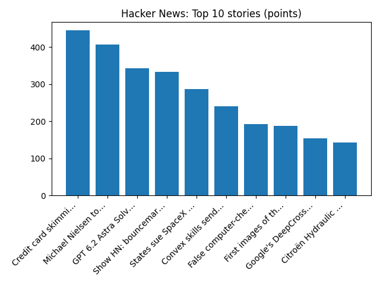

Hundreds of thousands still without power a day after US slammed with Thanksgiving storms
BBC — Science
YOUR DAILY INTELLIGENCE BRIEF · 2026-11-28
Global watch: Hundreds of thousands still without power a day after US slammed with Thanksgiving storms, How gamers are using AI and leaked files to clone Grand Theft Auto 6.
Northern Virginia: Nor’easter leaves thousands without power across Northern Virginia, floods Alexandria streets - DC News Now, From Lights to Nutcrackers: Holiday Cheer in Northern Virginia - InsideNoVa.

Global coverage includes Hundreds of thousands still without power a day after US slammed with Thanksgiving storms; How gamers are using AI and leaked files to clone Grand Theft Auto 6; Black Friday shoppers undeterred by inflation and bad weather - AP News. Local coverage includes Nor’easter leaves thousands without power across Northern Virginia, floods Alexandria streets - DC News Now; From Lights to Nutcrackers: Holiday Cheer in Northern Virginia - InsideNoVa.

Wild Animal Ethics
Wild Animal Ethics: The Moral and Political Problem of Wild Animal Suffering is a 2020 book by philosopher Kyle Johannsen, published by Routledge. It examines the moral and political obligations humans may have to reduce wild animal suffering, including suffering caused by natural processes rather than human activities.
https://en.wikipedia.org/wiki/Wild_Animal_Ethics
Runs so far today: 1